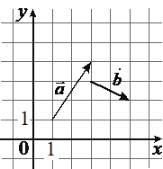
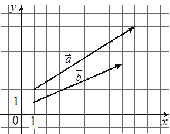
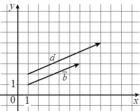

5. Впишите правильный ответ
На координатной плоскости изображены векторы a и b, координатами которых являются целые числа. Найдите длину вектора a+4b.

Даны векторы a(25;0) и b(1;−5). Найдите длину вектора a−4b.
Даны векторы a(-13;4) и b(-6;1). Найдите скалярное произведение a⋅b.
Даны векторы a(1;1) и b(0;7). Найдите длину вектора 8a+b.
Даны векторы a(5;3) и b(4;-6). Найдите скалярное произведение a⋅b.
На координатной плоскости изображены векторы a и b, координатами которых являются целые числа. Найдите длину вектора a+4b.
Даны векторы a(31;0) и b(1;-1). Найдите длину вектора a-24b.
Даны векторы a(14;-2) и b(5;-8). Найдите скалярное произведение a⋅b
Даны векторы a(-3;5) и b(1;13). Найдите скалярное произведение a⋅b
На координатной плоскости изображены векторы a и b, координатами которых являются целые числа. Найдите скалярное произведение a⋅b.
Даны векторы a(2;0) и b(1;4). Найдите длину вектора a+3b.
На координатной плоскости изображены векторы a и b, координатами которых являются целые числа. Найдите скалярное произведение a⋅b.
На координатной плоскости изображены векторы a и b, координатами которых являются целые числа. Найдите скалярное произведение a⋅b.
Даны векторы a(5;-7) и b(14;1). Найдите скалярное произведение a⋅b
Длины векторов a и b равны 3 и 5, а угол между ними равен 60°. Найдите скалярное произведение a⋅b
Длины векторов a и b равны 3 и 7, а угол между ними равен 60°. Найдите скалярное произведение a⋅b.